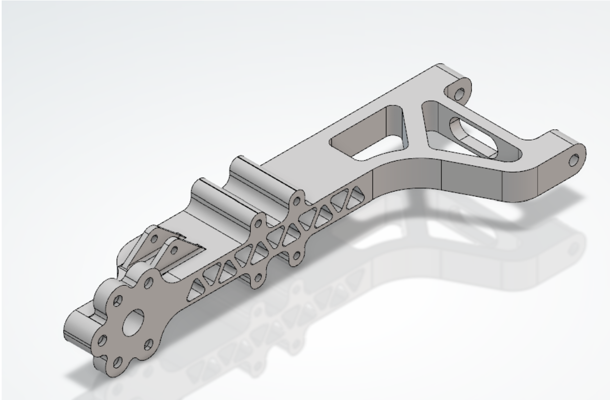
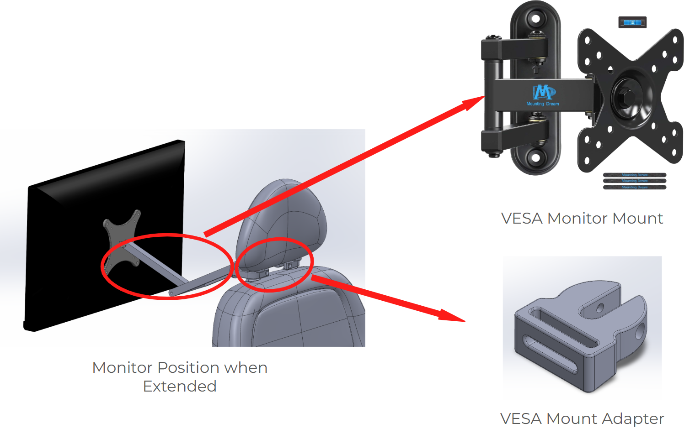
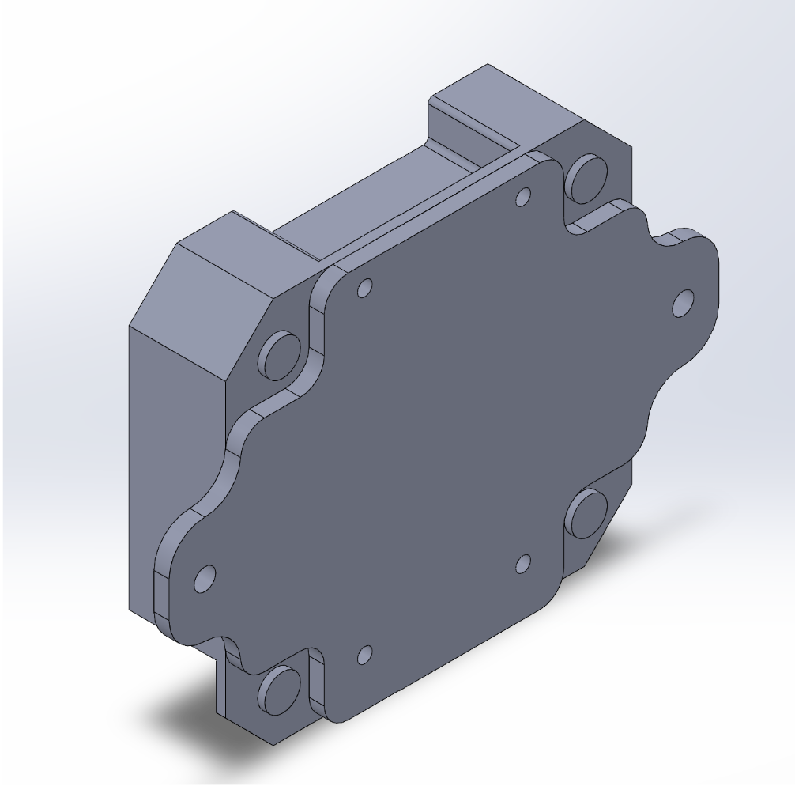
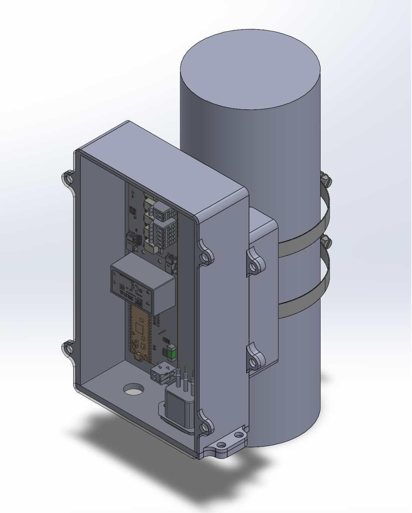
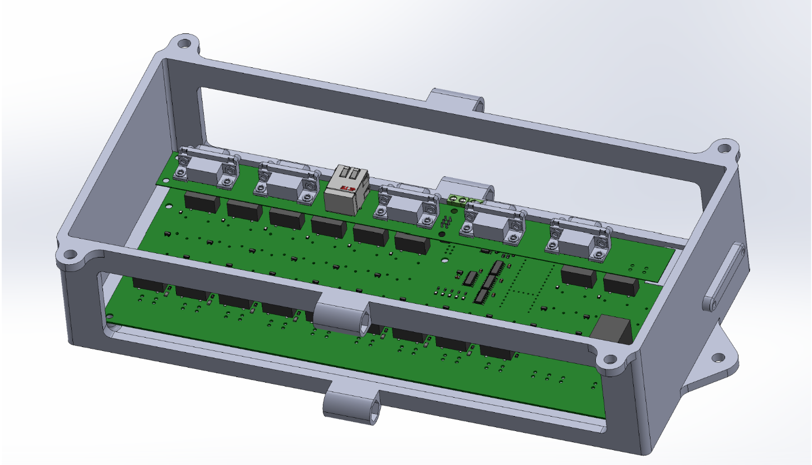
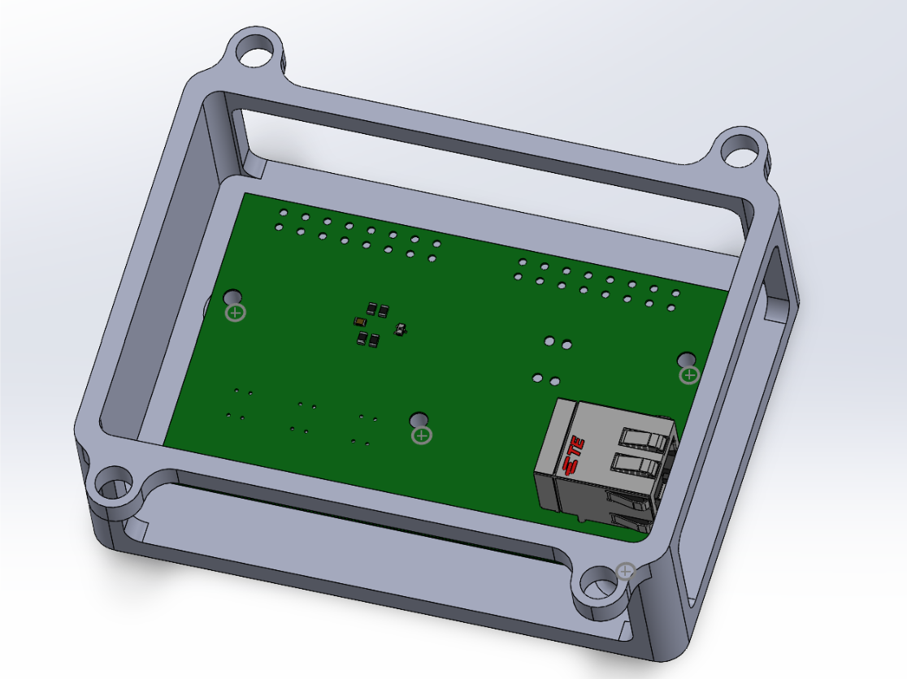

Part Designs

Overview
A collection of individual parts designed in SolidWorks: vehicle mounts, electronics enclosures, and a lightweight structural arm. Each part is designed around the hardware it holds and how it is fastened in place.
Parts
Car Backseat Monitor Mount

A VESA mount adapter that attaches an articulating VESA monitor arm to a car seat's headrest posts, so the monitor can extend toward the back seat.
Car Router Mount

A layered mounting plate with a contoured face and corner fastening points for securing a router in the vehicle.
Traffic Light Box Design

A pole-mounted electronics enclosure, held on with hose clamps, that houses the control boards for a test traffic light.
Controller Mount


Open-frame mounts that hold controller circuit boards, with bolt-down ears and cutouts that keep connectors accessible.
Motor Arm Design
A structural arm (top image) with truss-style cutouts to cut weight while keeping stiffness, and a bolted hub at one end for mounting the motor.
Tools
SolidWorks, 3D CAD modeling, design for manufacturing